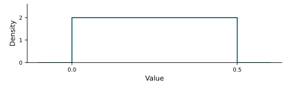
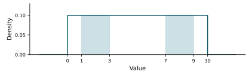
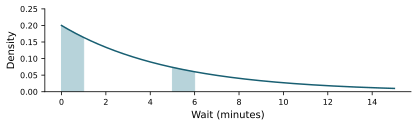
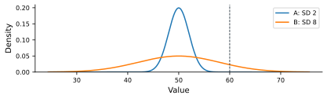
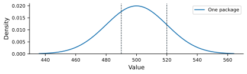

Statistics course / All banks
Unit 3: Continuous probability models Chapters 5-6 · 100 questions · Four-function calculator allowed
Choose one answer. Reveal feedback after trying the question. All numerical scenarios are illustrative. The full bank and explanations are available for study; Chapter 9 is not tested.
Download printable PDF with key Download JSON for AI study Unit-test specifications
Study with AI Quiz me from this statistics unit bank, one question at a time. Keep all four choices visible, but withhold the correct answer and explanation until I respond. Ask me to explain my reasoning. Then give feedback, cite the question ID, and revisit missed concepts later. Use a mix of skill groups. Do not invent harder calculations.
Upload this bank's PDF or JSON along with that prompt.
Skill group All ten groups Continuous densities, areas, and cumulative probabilities Uniform probabilities and cutoffs Uniform changes, conditioning, and assumptions Exponential shape, rates, and tails Exponential memorylessness and count connections Normal location, spread, and symmetry Standardized comparisons and units Normal areas and supplied probabilities Normal percentiles and critical cutoffs Model choice and integrated comparisons Reveal all answers 100 questions
U3-G01: Continuous densities, areas, and cumulative probabilities
U3-001. A density is flat at height 2 over a half-unit interval and zero elsewhere. Is height 2 alone a problem? 
Yes; every density height must be at most 1. No; its total area is 1, and height is not probability. Yes; its probability is 2 everywhere. No; total area may be any positive number. Slides 5.1, page 7: Height is not probability · evaluate
Reveal answer and explanation B. No; its total area is 1, and height is not probability.
A density can exceed 1; probabilities are areas, and the full area here is 2 times 0.5.
U3-002. A proposed density dips below zero over an interval. What is wrong? Its maximum must equal 1. A density must be flat everywhere. It would assign negative area to that interval. Every valid density must be symmetric. Slides 5.1, page 2: A probability density · evaluate
Reveal answer and explanation C. It would assign negative area to that interval.
Nonnegative density is required for nonnegative interval probabilities.
U3-003. A rectangular density covers 0 to 4 and is zero elsewhere. What height makes total area 1? 1. 4. 0.5. 0.25. Slides 5.1, page 3: The entire distribution · calculate
Reveal answer and explanation D. 0.25.
Width times height must equal 1.
U3-004. An exact continuous duration has P(X=4)=0. Can a timer report 4 seconds? Only if the density equals zero everywhere. Yes; rounding collects a positive-width interval of exact values. Only if the model becomes discrete before rounding. No; 4 seconds can never be recorded. Slides 5.1, page 8: One exact value · interpret
Reveal answer and explanation B. Yes; rounding collects a positive-width interval of exact values.
A rounded recorded value can have positive probability even though an exact point has zero area.
U3-005. For a continuous duration, how do P(X<6) and P(X≤6) compare? They are equal. The first is always zero. They differ by the density height at 6. The second is always twice the first. Slides 5.1, page 10: Endpoints · compare
Reveal answer and explanation A. They are equal.
An individual boundary point has zero probability.
U3-006. A continuous model gives F(6)=0.70. What does that say? The density height at 6 is 0.70. The mean is 6. 70% of modeled durations are at most 6. 70% of durations equal exactly 6. Slides 5.1, page 11: The cumulative distribution · interpret
Reveal answer and explanation C. 70% of modeled durations are at most 6.
The cumulative function gives probability up through the cutoff.
U3-007. F(3)=0.20 and F(7)=0.80 for a continuous variable. What is P(3<X<7)? 0.20. 1.00. 0.60. 0.80. Slides 5.1, page 14: Between two cutoffs · calculate
Reveal answer and explanation C. 0.60.
Subtract the cumulative areas at the two cutoffs.
U3-008. Someone reports F(4)=0.6 and F(8)=0.4 for one variable. Why is this impossible? Cumulative functions must always equal 0.5. Both numbers are below 1. Every cutoff must have the same probability. A cumulative probability cannot decrease as the cutoff rises. Slides 5.1, page 16: A possible cumulative function · evaluate
Reveal answer and explanation D. A cumulative probability cannot decrease as the cutoff rises.
The event up through 4 is contained in the event up through 8.
U3-009. A continuous model has F(9)=0.80. What percent exceeds 9? 9%. 100%. 20%. 80%. Slides 5.1, page 17: A percentile · calculate
Reveal answer and explanation C. 20%.
The upper tail complements the cumulative probability.
U3-010. Durations are rounded to the nearest whole second. Ignoring tie conventions at boundaries, which exact interval reports as 4? 0 to 4 seconds. 4 to 5 seconds. 3.5 to 4.5 seconds. Only the exact point 4. Slides 5.1, page 9: Rounded measurements · interpret
Reveal answer and explanation C. 3.5 to 4.5 seconds.
Nearest-unit rounding collects values within half a unit of 4.
U3-G02: Uniform probabilities and cutoffs
U3-011. X is uniform from 0 to 10. Compare intervals 1 to 3 and 7 to 9. 
The second is more likely because its values are larger. The first is more likely because it is closer to zero. Their probabilities depend on the sample median. They have equal probability. Slides 5.2, page 1: The uniform distribution · compare
Reveal answer and explanation D. They have equal probability.
Under a flat density, equal-length intervals inside the support have equal area.
U3-012. A wait is uniform from 0 to 12 minutes. What is P(3<X<6)? 3/6. 9/12. 6/12. 3/12. Slides 5.2, page 4: A waiting interval · calculate
Reveal answer and explanation D. 3/12.
The interval occupies 3 of the support's 12 minutes.
U3-013. X is uniform from 2 to 10. To find P(0<X<5), which portion contributes area? 2 to 5. 5 to 10. 0 to 5. 0 to 2. Slides 5.2, page 7: A partially overlapping interval · interpret
Reveal answer and explanation A. 2 to 5.
There is no density outside the support, so only the overlap contributes.
U3-014. X is uniform from 2 to 10. What can be said about P(X>12)? It is 1/2. It is larger than P(X>8). It is zero. It is the density height at 12. Slides 5.2, page 8: Outside the support · evaluate
Reveal answer and explanation C. It is zero.
The event lies entirely outside the model's support.
U3-015. A continuous uniform model runs from 4 to 12. What is its mean? 12. 16. 8. 4. Slides 5.2, page 9: The center of a uniform distribution · calculate
Reveal answer and explanation C. 8.
The mean is the midpoint of the support.
U3-016. A wait is uniform from 0 to 20 minutes. What is its 75th percentile? 15 minutes. 75 minutes. 5 minutes. 20 minutes. Slides 5.2, page 12: A percentile cutoff · calculate
Reveal answer and explanation A. 15 minutes.
The cutoff lies 75% of the distance across the support.
U3-017. A uniform wait ranges from 0 to 10. Only 10% exceed a cutoff. Where is that cutoff? At 1. At 9. At 5. At 10. Slides 5.2, page 13: An upper-tail cutoff · interpret
Reveal answer and explanation B. At 9.
The uppermost tenth of the support is 9 to 10.
U3-018. X is uniform from 0 to 12. Which symmetric interval contains the middle 50%? 5 to 7. 3 to 9. 6 to 12. 0 to 6. Slides 5.2, page 14: The middle half · interpret
Reveal answer and explanation B. 3 to 9.
The middle half has half the full width and is centered at 6.
U3-019. X is uniform from 0 to 10. Which event is more likely? X<6. X>6. They are equally likely. X=6. Slides 5.2, page 5: A short wait · compare
Reveal answer and explanation A. X<6.
The lower interval has width 6, while the upper interval has width 4.
U3-020. Uniform model A spans width 4; model B spans width 8. Which density is taller? B. The one with the larger mean regardless of width. They have equal height. A. Slides 5.2, page 3: Uniform density · interpret
Reveal answer and explanation D. A.
A narrower rectangular support requires a taller density to preserve total area 1.
U3-G03: Uniform changes, conditioning, and assumptions
U3-021. Compare U(0,12) and U(20,32). What is true about their standard deviations? The first is larger because it includes zero. The second is larger because its mean is larger. They are equal. Both standard deviations are zero. Slides 5.2, page 10: Uniform spread · compare
Reveal answer and explanation C. They are equal.
A common shift changes center without changing spread.
U3-022. The model changes from U(0,10) to U(0,20). What happens to P(X<5)? It halves. It stays unchanged. It becomes 1. It doubles. Slides 5.2, page 17: Changing the range · predict
Reveal answer and explanation A. It halves.
The favorable interval retains width 5 while total support width doubles.
U3-023. Both endpoints of a uniform model increase by 4. What happens to its mean and SD? Mean rises by 4; SD stays unchanged. SD rises by 4; mean stays unchanged. Both stay unchanged. Both rise by 4. Slides 5.2, page 10: Uniform spread · predict
Reveal answer and explanation A. Mean rises by 4; SD stays unchanged.
A translation shifts location but preserves distances.
U3-024. A uniform interval centered at 10 doubles its width while keeping center 10. What happens? Mean stays 10; SD doubles. Both stay unchanged. Both double. Mean doubles; SD stays unchanged. Slides 5.2, page 11: Calculating uniform spread · predict
Reveal answer and explanation A. Mean stays 10; SD doubles.
Uniform mean depends on midpoint; SD is proportional to width.
U3-025. X is uniform from 0 to 12. Given X>4, what is P(X>8)? 8/12. 4/8. 8/8. 4/12. Slides 5.2, page 15: A conditional interval · calculate
Reveal answer and explanation B. 4/8.
The conditioned support is 4 to 12, with favorable part 8 to 12.
U3-026. Given that a U(0,12) wait exceeds 4, what shape describes the total wait's conditional density? A point at 4. Flat over 4 to 12. Normal over all real numbers. Flat over 0 to 12 unchanged. Slides 5.2, page 16: The conditional density · interpret
Reveal answer and explanation B. Flat over 4 to 12.
Restricting a uniform density to a subinterval and renormalizing preserves flatness there.
U3-027. Observed waits cluster near 0 and near 12, with few in the middle. What does that suggest about U(0,12)? The uniform model is automatically proved. The range alone establishes the density. Its flat-density assumption deserves checking. A mean of 6 guarantees the uniform model. Slides 5.2, page 18: Checking the model · evaluate
Reveal answer and explanation C. Its flat-density assumption deserves checking.
Support endpoints do not determine the shape inside the support.
U3-028. A U(0,10) sample has mean 5.4. Must the model be wrong? No; any mean proves the model. Yes; all uniform values must equal 5. No; a sample mean can differ from the model mean. Yes; every sample must average exactly 5. Slides 5.2, page 19: Theoretical and empirical summaries · evaluate
Reveal answer and explanation C. No; a sample mean can differ from the model mean.
Sampling variation can produce means away from the theoretical center.
U3-029. Compare one U(0,12) wait with the average of 100 independent such waits. Which is less variable? The average. The individual wait. They have identical spread. The average must have zero spread. Slides 5.2, page 20: From one wait to many · compare
Reveal answer and explanation A. The average.
Averaging independent observations reduces variability without fixing the result exactly.
U3-030. A U(0,12) wait has already lasted 11 minutes. What is the largest possible additional wait under this model? 1 minute. There is no upper bound. 11 minutes. 12 minutes. Slides 5.2, page 15: A conditional interval · predict
Reveal answer and explanation A. 1 minute.
The total wait cannot exceed the upper support endpoint 12.
U3-G04: Exponential shape, rates, and tails
U3-031. For an exponential wait, which one-minute interval has more probability? 
5 to 6 minutes. They have equal probability. Both have probability zero. 0 to 1 minute. Slides 5.3, page 6: The density · compare
Reveal answer and explanation D. 0 to 1 minute.
An exponential density decreases with waiting time.
U3-032. Requests follow a constant-rate Poisson process at 4 per hour. What is the mean waiting time to the next request? 4 minutes. 240 minutes. 60 minutes. 15 minutes. Slides 5.3, page 4: Mean waiting time · calculate
Reveal answer and explanation D. 15 minutes.
Mean wait is one quarter hour, or 15 minutes.
U3-033. An exponential waiting time has mean 5 minutes. What rate per minute matches it? 25. 0.2. 0.5. 5. Slides 5.3, page 5: Converting a mean to a rate · calculate
Reveal answer and explanation B. 0.2.
Rate is the reciprocal of mean wait in consistent units.
U3-034. An exponential model has mean wait 4 minutes. What is its SD? 16 minutes. 2 minutes. 0 minutes. 4 minutes. Slides 5.3, page 18: Exponential spread · interpret
Reveal answer and explanation D. 4 minutes.
For an exponential distribution, mean and SD are both the reciprocal of the rate.
U3-035. For an exponential distribution with mean 5 minutes, how does its median compare? The median is below 5. The median exceeds 5. The median equals 5. The median does not exist. Slides 5.3, page 17: Mean and median · compare
Reveal answer and explanation A. The median is below 5.
The long right tail pulls the mean above the median.
U3-036. A supplied exponential model gives P(X>8)=0.20. What is P(X≤8)? 0.40. 0.80. 0.20. 1.20. Slides 5.3, page 10: A wait within a deadline · calculate
Reveal answer and explanation B. 0.80.
Meeting the deadline complements exceeding it.
U3-037. P(X>2)=0.50 and P(X>6)=0.125 for an exponential wait. What is P(2<X<6)? 0.375. 0.125. 0.625. 0.50. Slides 5.3, page 12: Between two waits · calculate
Reveal answer and explanation A. 0.375.
Subtract the farther upper tail from the nearer upper tail: 0.50-0.125=0.375.
U3-038. A rate is stated per hour but a cutoff is inserted as a number of minutes. What must be done before using the tail formula? Round the probability to an integer. Multiply both numbers by the sample size. Replace the cutoff with the mean. Express rate and cutoff in compatible time units. Slides 5.3, page 14: Units in the exponent · evaluate
Reveal answer and explanation D. Express rate and cutoff in compatible time units.
The rate-time product must use matching units.
U3-039. Waits are nonnegative. Is that sufficient to establish an exponential model? No; exponential values must be negative. No; the arrival process and distributional assumptions still need support. Yes; nonnegative variables have equal mean and SD. Yes; every nonnegative variable is exponential. Slides 5.3, page 1: An exponential waiting model · evaluate
Reveal answer and explanation B. No; the arrival process and distributional assumptions still need support.
Support alone does not determine the density or a constant-rate process.
U3-040. An exponential density extends far right with diminishing height. What does that say about very long waits? They are possible but less common than short waits. They must occur as often as short waits. They are impossible once the mean is exceeded. Every long wait has probability 1. Slides 5.3, page 8: Sketching the exponential density · interpret
Reveal answer and explanation A. They are possible but less common than short waits.
An unbounded right tail allows large values without making them frequent.
U3-G05: Exponential memorylessness and count connections
U3-041. An exponential wait has already lasted 10 minutes. Compared with a fresh wait, what is the distribution of the additional wait? It must end immediately. The same under the memoryless model. Its expected remaining duration is the original mean minus 10. It becomes uniform. Slides 5.3, page 20: The memoryless property · predict
Reveal answer and explanation B. The same under the memoryless model.
Memorylessness concerns additional waiting conditional on having waited so far.
U3-042. For an exponential model, P(X>3)=0.40. Given X>7, what is the chance of more than 3 additional minutes? 0.40. 1. 0. 0.40 divided by 7. Slides 5.3, page 21: A remaining wait · interpret
Reveal answer and explanation A. 0.40.
Memorylessness gives P(X>10 given X>7)=P(X>3).
U3-043. After an 11-minute wait, U(0,12) allows at most 1 more minute. An exponential model allows longer additional waits. What explains the difference? Uniform waits have a finite endpoint; exponential waits do not. Exponential waits stop at their mean. Uniform waits are always zero. Both models are memoryless. Slides 5.3, page 22: Comparing waiting models · compare
Reveal answer and explanation A. Uniform waits have a finite endpoint; exponential waits do not.
Their supports and conditional-wait behavior differ.
U3-044. Arrival rates sharply rise at lunchtime. What is questionable about a single exponential waiting model over the whole day? Recording waits in minutes. Allowing a long wait. Nonnegative waiting times. A constant rate across the whole period. Slides 5.3, page 27: Model assumptions · evaluate
Reveal answer and explanation D. A constant rate across the whole period.
The homogeneous exponential waiting model relies on a stable Poisson-process rate.
U3-045. The same process supplies arrivals per hour and time until next arrival. Which assignment is appropriate? Uniform for both automatically. Binomial for both automatically. Poisson for the count; exponential for the wait. Exponential for the count; Poisson for the wait. Slides 5.3, page 23: Counts or waiting time? · interpret
Reveal answer and explanation C. Poisson for the count; exponential for the wait.
These are linked but different random variables under a constant-rate Poisson process.
U3-046. How does no arrivals in the next 5 minutes relate to waiting more than 5 minutes for the next arrival? The first requires exactly one arrival. They are independent unrelated events. They describe the same event, ignoring a zero-probability boundary. They are complements. Slides 5.3, page 26: An empty interval · compare
Reveal answer and explanation C. They describe the same event, ignoring a zero-probability boundary.
No event before the cutoff means the next event occurs after it.
U3-047. A constant-rate process averages 0.5 requests per minute. What is the mean request count over 10 minutes? 20. 0.5. 10. 5. Slides 5.3, page 24: A Poisson connection · calculate
Reveal answer and explanation D. 5.
Expected count is rate times interval length.
U3-048. An exponential arrival rate doubles. What happens to mean waiting time? It stays unchanged. It becomes zero. It doubles. It halves. Slides 5.3, page 4: Mean waiting time · predict
Reveal answer and explanation D. It halves.
Mean wait is the reciprocal of rate.
U3-049. The mean lifetime is 8 hours. What does an expected total lifetime of 80 hours for ten items mean? Every set totals exactly 80 hours. All items fail simultaneously at hour 80. It is an average total over repeated sets, not a guaranteed total. Every item lasts exactly 8 hours. Slides 5.3, page 19: Expected total lifetime · interpret
Reveal answer and explanation C. It is an average total over repeated sets, not a guaranteed total.
Expected values add but individual and total outcomes still vary.
U3-050. Compare one exponential duration with the average of many independent durations. What remains the same? The SD. The mean. The maximum possible duration becomes finite for the average. The entire density shape. Slides 5.3, page 28: Preparing for averages · compare
Reveal answer and explanation B. The mean.
Averaging preserves the expected center while reducing variability.
U3-G06: Normal location, spread, and symmetry
U3-051. A normal model's mean rises from 40 to 50 while SD stays 6. What happens to the curve? It becomes wider. It shifts right without changing width. Its total area increases. It becomes right-skewed. Slides 6.1, page 1: A normal distribution · predict
Reveal answer and explanation B. It shifts right without changing width.
The mean controls location; SD controls width.
U3-052. Normal models A and B share mean 50, with SDs 2 and 8. Which has more probability above 60? 
Both probabilities are exactly zero. B. They have equal upper tails. A. Slides 6.2, page 20: Different spreads · compare
Reveal answer and explanation B. B.
A fixed cutoff above the mean is fewer SD away in the wider model.
U3-053. For a standard normal variable, compare P(Z<-1.4) and P(Z>1.4). The left tail is larger. They are equal. The right tail is larger. Both equal 0.5. Slides 6.1, page 12: Symmetry · compare
Reveal answer and explanation B. They are equal.
Normal symmetry makes opposite equal-distance tails equal.
U3-054. A normal model has mean 20. What is P(X<20)? 1. 0.5. 0. The SD. Slides 6.1, page 13: The center divides the area · interpret
Reveal answer and explanation B. 0.5.
The symmetric center splits total area in half.
U3-055. The course uses N(mean, SD). A technician expects readings from N(40,6) to cluster near 6. What is the best correction? They cluster near 6; 40 is the sample size. The model allows only the two values 6 and 40. The readings cluster near 40; 6 describes their spread. Every reading must equal 40. Slides 6.1, page 2: Normal notation · evaluate
Reveal answer and explanation C. The readings cluster near 40; 6 describes their spread.
The first parameter is the center; the SD measures variation around it, rather than another center.
U3-056. Two normal curves share SD but have different means. What is equal? Their centers. Their widths and shapes. Their 90th-percentile values. Their probabilities below every fixed cutoff. Slides 6.1, page 1: A normal distribution · compare
Reveal answer and explanation B. Their widths and shapes.
A common SD gives identical shape and width; different means shift the curves.
U3-057. A strongly skewed variable is converted to z-scores. Does it become normal? Yes; subtracting the mean removes the tail. Yes; every z-score distribution is standard normal. No; z-scores cannot be negative. No; standardization shifts and rescales without removing skew. Slides 6.1, page 22: Location versus shape · evaluate
Reveal answer and explanation D. No; standardization shifts and rescales without removing skew.
A linear transformation preserves distributional shape.
U3-058. A proposed normal model gives substantial probability to negative durations. What is the concern? It assigns appreciable probability to impossible values. Normal distributions cannot model any positive variable. Its mean must be zero. Every duration must be negative. Slides 6.2, page 24: A model boundary · evaluate
Reveal answer and explanation A. It assigns appreciable probability to impossible values.
A normal approximation may be poor when impossible values receive meaningful probability.
U3-059. The SD of a normal model increases while the mean stays fixed. What happens to its peak? The center shifts right. It becomes higher and narrower. It becomes lower as the curve spreads out. The total area rises above 1. Slides 6.1, page 1: A normal distribution · predict
Reveal answer and explanation C. It becomes lower as the curve spreads out.
Spreading the same area over a wider curve lowers its peak.
U3-060. Normal models share SD 4 but have means 10 and 14. Which has more probability below 8? They have equal probabilities. The mean-10 model. The mean-14 model. Both have probability 0.5. Slides 6.2, page 21: Different centers · compare
Reveal answer and explanation B. The mean-10 model.
A left cutoff is nearer the center of the mean-10 model.
U3-G07: Standardized comparisons and units
U3-061. A normal variable has mean 40 and SD 5. What z-score corresponds to 50? 10. 0.2. 2. -2. Slides 6.1, page 5: A positive z-score · calculate
Reveal answer and explanation C. 2.
The value is 10 above the mean, or 2 SD.
U3-062. A variable has mean 20 and SD 4. What z-score corresponds to 12? 3. -8. 2. -2. Slides 6.1, page 6: A negative z-score · calculate
Reveal answer and explanation D. -2.
The value is 8 below the mean, or -2 SD.
U3-063. A value equals its distribution's mean. What is its z-score? The mean. The SD. 0. 1. Slides 6.1, page 7: At the mean · interpret
Reveal answer and explanation C. 0.
Its deviation from the mean is zero.
U3-064. A recorded value has z=-1.5. What does that mean? It has probability -1.5. It is above 98.5% of values automatically. It is 1.5 original units below zero. It is 1.5 SD below the mean. Slides 6.1, page 4: A standardized value · interpret
Reveal answer and explanation D. It is 1.5 SD below the mean.
A z-score measures signed distance in SD units.
U3-065. Mean is 30 and SD is 4. Which value has z=1.5? 36. 45. 26. 31.5. Slides 6.1, page 8: Returning to original units · calculate
Reveal answer and explanation A. 36.
Add 1.5 times 4 to the mean.
U3-066. A is 6 above its mean with SD 3; B is 8 above its mean with SD 8. Which is more extreme above its group center? A. They are equally extreme. B. The larger raw difference always determines extremeness. Slides 6.1, page 9: Comparing different scales · compare
Reveal answer and explanation A. A.
Their z-scores are 2 and 1.
U3-067. A student treats z=2 as a probability of 2. What is wrong? A standardized distance is not an area probability. A z-score can never exceed 1. A normal model cannot have positive z-scores. A z-score must be a percentage. Slides 6.1, page 10: Scores are not probabilities · evaluate
Reveal answer and explanation A. A standardized distance is not an area probability.
Z-scores can exceed 1, while probabilities cannot.
U3-068. X has mean 50, SD 10. Which standard-normal event corresponds to X<60? Z>1. Z<6. Z<1. Z<-1. Slides 6.1, page 11: Standardizing an event · interpret
Reveal answer and explanation C. Z<1.
Subtract the mean and divide by SD without reversing the inequality.
U3-069. A nonnormal variable has a well-defined mean and SD. Can its z-score automatically be looked up as a standard-normal probability? No; the normal shape assumption still matters. No; only normal variables can be standardized. Yes; z-scores always imply normality. Yes; a positive SD is sufficient. Slides 6.1, page 21: Normality matters · evaluate
Reveal answer and explanation A. No; the normal shape assumption still matters.
Standardization is broadly possible, but normal probabilities require a normal model.
U3-070. All values and their mean and SD are converted from meters to centimeters. What happens to z-scores? They stay unchanged. They divide by 100. They all become positive. They multiply by 100. Slides 6.1, page 8: Returning to original units · predict
Reveal answer and explanation A. They stay unchanged.
The conversion factor cancels in the standardized ratio.
U3-G08: Normal areas and supplied probabilities
U3-071. For a bell-shaped normal model, about 68% lies within 1 SD. About how much lies outside that central interval? 68%. 95%. 32%. 16% in total. Slides 6.1, page 14: One standard deviation · interpret
Reveal answer and explanation C. 32%.
The outside area is the complement, split between two tails.
U3-072. About 95% of a normal model lies within 2 SD. About what percent lies above mean+2 SD? 2.5%. 95%. 47.5%. 5%. Slides 6.1, page 16: Two standard deviations · interpret
Reveal answer and explanation A. 2.5%.
The remaining 5% is split equally between the two tails.
U3-073. About 99.7% lies within 3 SD in a normal model. About what percent lies outside on both sides combined? 0.15%. 99.7%. 3%. 0.3%. Slides 6.1, page 17: Three standard deviations · interpret
Reveal answer and explanation D. 0.3%.
The combined outside area is 100%-99.7%.
U3-074. A supplied normal table gives P(Z<1.2)=0.8849. What is P(Z>1.2)? 1.8849. 0.1151. 0.44245. 0.8849. Slides 6.1, page 19: Using a cumulative table · calculate
Reveal answer and explanation B. 0.1151.
Use the complement for the upper tail.
U3-075. P(Z>1.2)=0.1151. By symmetry, what is P(Z<-1.2)? 0.5. 0.8849. 0.1151. -0.1151. Slides 6.1, page 20: A negative cumulative cutoff · interpret
Reveal answer and explanation C. 0.1151.
Opposite equal-distance tails have equal positive probability.
U3-076. For one normal model, P(X<40)=0.20 and P(X<60)=0.85. What is P(40<X<60)? 0.65. 1.05. 0.20. 0.85. Slides 6.2, page 4: A probability between cutoffs · calculate
Reveal answer and explanation A. 0.65.
Subtract cumulative lower-tail areas.
U3-077. A normal model assigns 0.90 inside an accepted interval. What probability is outside it? 0.90. 0.10. 1.90. 0.05 necessarily. Slides 6.2, page 5: Outside an acceptable range · calculate
Reveal answer and explanation B. 0.10.
Outside complements inside; without symmetry of the interval its tails need not be equal.
U3-078. For a normal variable, a cutoff above the mean is reported to have upper-tail probability 0.80. What should be checked? Whether an upper tail must be negative. Whether every normal curve has mean zero. The tail direction; that upper tail must be below 0.5. Whether probabilities can exceed 0.5 at all. Slides 6.2, page 9: Checking the direction · evaluate
Reveal answer and explanation C. The tail direction; that upper tail must be below 0.5.
A cutoff above the symmetric center leaves less than half the area to its right.
U3-079. Under an exact normal model, how do probabilities below 480 and at most 480 compare? They are equal. Below is always zero. At most is larger by the density height. They differ by 1/480. Slides 6.2, page 6: Strict or inclusive? · compare
Reveal answer and explanation A. They are equal.
A continuous point contributes zero probability.
U3-080. A model predicts 5% of items fall outside specifications. Among 200 items, how many are expected outside? 5. 10. Exactly 10 must occur. 40. Slides 6.2, page 10: From probability to expected count · calculate
Reveal answer and explanation B. 10.
Expected count is sample count times the modeled fraction, without a guarantee.
U3-G09: Normal percentiles and critical cutoffs
U3-081. What equation describes a continuous model's 90th percentile k? The mean equals 0.90k. P(X=k)=0.90. P(X>k)=0.90. P(X≤k)=0.90. Slides 6.2, page 11: A percentile · interpret
Reveal answer and explanation D. P(X≤k)=0.90.
The percentile cutoff has the stated area to its left.
U3-082. For a normal model, where is the 10th percentile? Below the mean. At the largest possible value. At the mean. Above the mean. Slides 6.2, page 16: A lower-tail cutoff · compare
Reveal answer and explanation A. Below the mean.
The lowest tenth ends on the lower side of the symmetric center.
U3-083. Only 5% exceed cutoff k. Which percentile is k? 5th. 100th. 95th. 50th. Slides 6.2, page 14: An upper-tail cutoff · interpret
Reveal answer and explanation C. 95th.
The remaining 95% lies at or below the cutoff.
U3-084. Mean is 100, SD is 10, and the supplied 90th-percentile z is 1.28. What is the corresponding value? 101.28. 112.8. 12.8. 87.2. Slides 6.2, page 12: Finding a percentile · calculate
Reveal answer and explanation B. 112.8.
Return to original units with mean plus z times SD.
U3-085. A symmetric central normal interval contains 90%. How much area lies in each outside tail? 90%. 5%. 45%. 10%. Slides 6.2, page 17: The middle 90% · interpret
Reveal answer and explanation B. 5%.
The excluded 10% splits equally between the tails.
U3-086. A supplied positive critical z leaves 0.025 to its right. What cumulative area lies to its left? 0.95. 0.5. 0.025. 0.975. Slides 6.2, page 15: Critical value · interpret
Reveal answer and explanation D. 0.975.
Left and right areas total 1.
U3-087. For a normal distribution, how do Q1 and Q3 lie relative to the mean? Both lie above it. They are equally distant on opposite sides. Both equal it. Q3 must be twice Q1. Slides 6.2, page 18: Quartiles from a model · compare
Reveal answer and explanation B. They are equally distant on opposite sides.
Quartile cutoffs are symmetric about the normal center.
U3-088. A question asks for the mass exceeded by only 10% of packages. What units should the answer have? A percentage of sample size. Probability units only. No units because it is a z-score automatically. Mass units. Slides 6.2, page 22: A probability or a cutoff? · interpret
Reveal answer and explanation D. Mass units.
The requested answer is an original-scale cutoff, not a probability.
U3-089. A normal model's mean rises by 3 with SD fixed. What happens to its 90th percentile? It rises by 3. It stays unchanged. It falls by 3. It rises by 90%. Slides 6.2, page 12: Finding a percentile · predict
Reveal answer and explanation A. It rises by 3.
Every fixed percentile shifts with the mean when spread stays fixed.
U3-090. A normal model's SD doubles with mean fixed. What happens to its model IQR? It quadruples. It becomes zero. It stays unchanged. It doubles. Slides 6.2, page 19: An interquartile range · predict
Reveal answer and explanation D. It doubles.
Normal quartile distances scale with SD.
U3-G10: Model choice and integrated comparisons
U3-091. Normal models have the same mean. For a fixed cutoff below that mean, which has the larger lower-tail probability? They must have equal tails. The one with more recorded observations regardless of SD. The model with the smaller SD. The model with the larger SD. Slides 6.2, page 20: Different spreads · compare
Reveal answer and explanation D. The model with the larger SD.
A wider curve places more area beyond a fixed cutoff away from its center.
U3-092. A normal model's mean increases, with SD fixed. At a fixed deadline, what happens to the probability of finishing before it? It becomes exactly 0.5. It stays unchanged. It increases. It decreases. Slides 6.2, page 21: Different centers · predict
Reveal answer and explanation D. It decreases.
Shifting durations right moves area away from the fixed lower-tail deadline.
U3-093. P(X>50)=0.50 and P(X>60)=0.10. Given X>50, what is P(X>60)? 0.60. 0.40. 0.10. 0.20. Slides 6.2, page 23: Conditional normal probability · calculate
Reveal answer and explanation D. 0.20.
The smaller upper-tail event is contained in the conditioned event, giving 0.10/0.50.
U3-094. A fitted normal model predicts 2% above a cutoff, while a large observed dataset has 18% above it. What should be investigated? Only the number of decimal places. Whether observations should be changed to fit the model. Whether the model fits the observed tail. Whether probabilities above 2% are impossible. Slides 6.2, page 26: Checking an empirical normal model · evaluate
Reveal answer and explanation C. Whether the model fits the observed tail.
A large model-data discrepancy warrants checking fit and assumptions.
U3-095. A model describes the mass of one package. Is its SD automatically appropriate for the mean mass of 100 independent packages? Yes; both are measured in grams. No; averages have no units. Yes; averages always vary more. No; the average has less spread. Slides 6.2, page 25: One package or an average? · compare
Reveal answer and explanation D. No; the average has less spread.
Units can match while distributions and spreads differ.
U3-096. Which model assigns equal probability to all equal-length subintervals within its support? A normal model. Every continuous model. An exponential model. A continuous uniform model. Slides 5.2, page 1: The uniform distribution · compare
Reveal answer and explanation D. A continuous uniform model.
Flat density, not continuity alone, gives equal interval areas.
U3-097. One model is symmetric and bell-shaped; another has a long right tail and decreases from zero onward. Which pairing fits those shapes? Both must be uniform. Exponential first; normal second. Normal first; exponential second. Uniform first; normal second. Slides 5.3, page 17: Mean and median · compare
Reveal answer and explanation C. Normal first; exponential second.
Normal symmetry and exponential right-skew are distinct modeling features.
U3-098. A normal model has mean 50 and SD 2. Which interval contains about 99.7%? 50 to 56. 48 to 52. 44 to 56. 46 to 54. Slides 6.1, page 15: Empirical Rule · calculate
Reveal answer and explanation C. 44 to 56.
The empirical rule uses three SD on each side.
U3-099. A probability interval is widened to include its original interval plus a region of positive density. What happens to its probability? It exceeds 1 automatically. It increases. It decreases. It stays unchanged. Slides 5.1, page 4: Probability as area · predict
Reveal answer and explanation B. It increases.
Adding positive area raises probability while the total remains at most 1.
U3-100. A package is accepted if 490<mass<520. Which part of its normal curve should be shaded? 
Only the point 500. Only the area between 490 and 520. Both outside tails. Everything above 520. Slides 6.2, page 8: Shading a normal probability · interpret
Reveal answer and explanation B. Only the area between 490 and 520.
A between-cutoffs event corresponds to the intervening area.